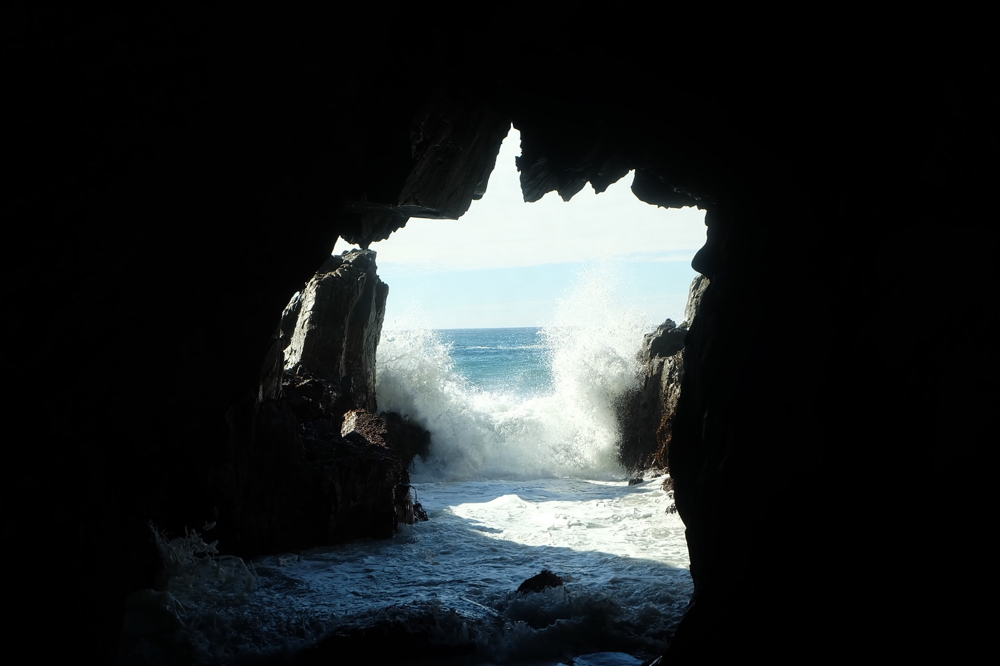

TIRED OF FEELING DRAINED OR LIKE YOU'RE SPINNING YOUR WHEELS AT THE END OF EVERY DAY? BECOME AN ESSENTIALIST AND END YOUR DAYS FEELING FULFILLED AND EXCITED ABOUT TOMORROW! OUR GOAL IS TO EMPOWER YOU TO CHANGE OR GET RID OF THOSE PROJECTS THAT DRAIN YOUR ENERGY USING A UNIQUE APPROACH TO ALIGN YOUR EFFORTS WITH YOUR VALUES.
SIGNING UP IS FREE AND QUICK, SIMPLY CHOOSE WHICH VALUES SPEAK TO YOU (OR ADD YOUR OWN!) AFTER THAT, MAKE A LIST OF PROJECTS YOU'RE WORKING ON NOW. ONCE THAT'S DONE, ALL OF YOUR VALUES AND PROJECTS WILL BE SHOWN SIDE BY SIDE.
FROM THERE, EASILY MANAGE WHERE YOUR VALUABLE ENERGY IS SPEND. YOU CAN UPDATE YOUR PROJECTS AND VALUES AT ANY TIME TOO, SO AS YOU PRUNE THOSE DRAINING TASKS YOU WILL BE ABLE TO SEE (AND FEEL!) THE DIFFERENCE. WHAT ARE YOU WAITING FOR, GET STARTED NOW!
